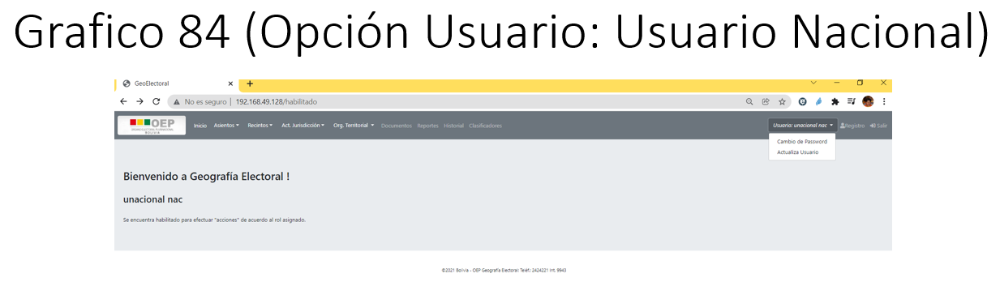
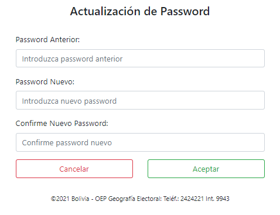
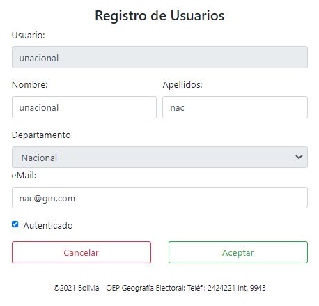
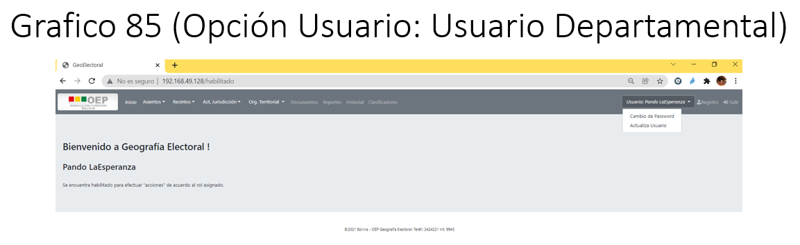

11. Usuario
a. Usuario Nacional
El presente usuario tendrá activo las opciones:
Cambio de Password
Actualiza Usuario
Opción Usuario
A través de esta opción se podrá cambiar el password y actualizar los datos del usuario logeado.
{kind=link}
Cambio de Password
A través de opción podrá cambiar el password antiguo por uno nuevo, si lo desea.
Procedimiento para el cambio de Password:
Paso 1: Una vez presionado la opción cambio de password se desplegara el siguiente formulario,
{kind=link}
Donde sebera introducir el password antiguo y a partir de ello registrar el nuevo password que le permita ingresar al sistema, una vez actualizado deberá presionar el botón Aceptar, para registrar la actualización, caso contrario deberá presionar el botón Cancelar.
Actualiza Usuario
A través de opción podrá actualizar los datos del usuario como ser el nombre de usuario, correo, etc.
Procedimiento para Actualizar Usuario:
Paso 1: Una vez presionado la opción actualiza usuario se desplegara el siguiente formulario,
{kind=link}
Donde podrá actualizar sus datos del usuario, una vez actualizado deberá presionar el botón Aceptar, para registrar la actualización, caso contrario deberá presionar el botón Cancelar.
b. Usuario Departamental
El presente usuario tendrá activo las opciones:
Cambio de Password
Actualiza Usuario
Opción Usuario
a través de esta opción se podrá cambiar el password y actualizar los datos del usuario logeado.
{kind=link}
Nota.- Todas las operaciones que se realizan en la presente opción son similares al del usuario TSE, solo que estas acciones están orientadas a los permisos asignados a los usuarios TED.